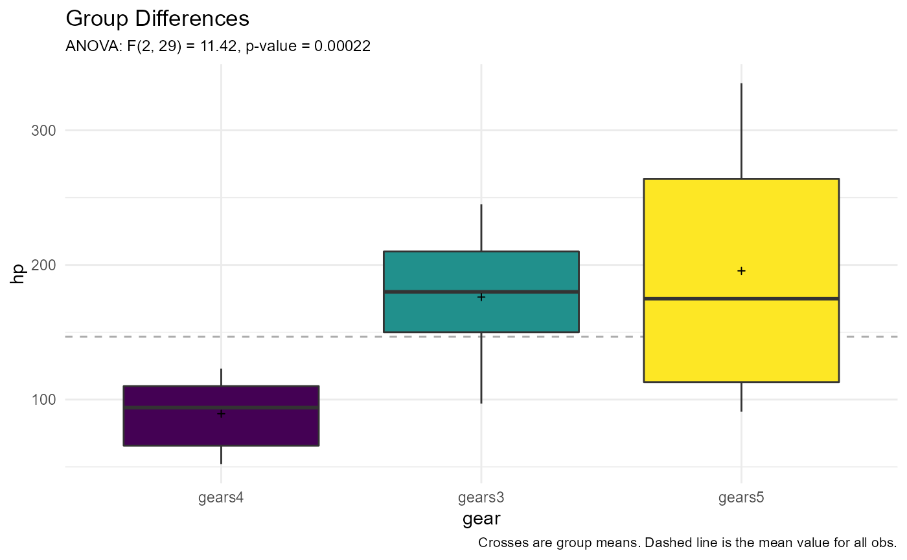
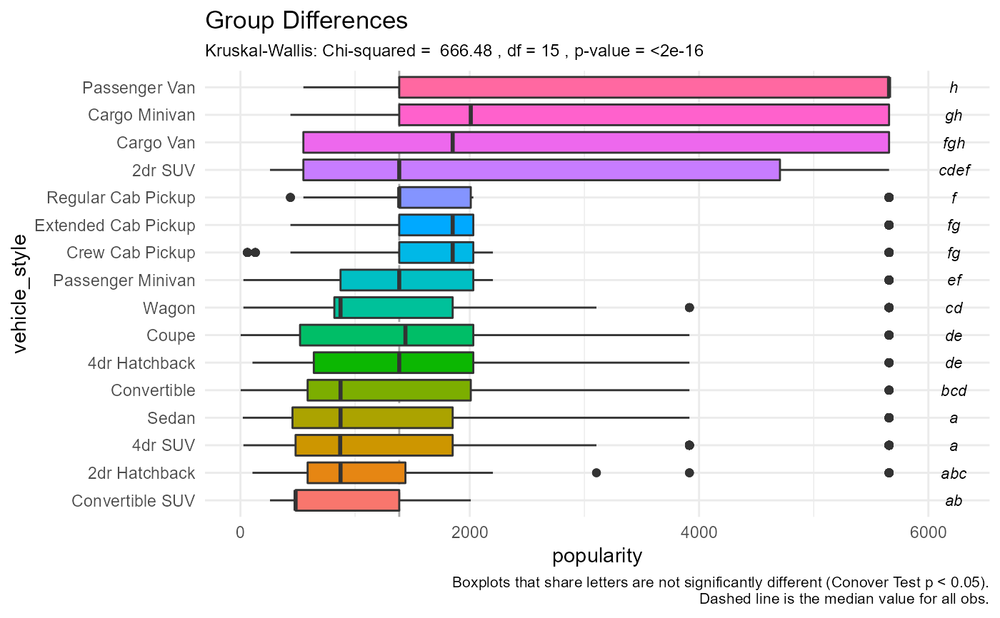

One-way analysis (ANOVA or Kruskal-Wallis Test) with post-hoc comparisons and plots
groupdiff(
data,
y,
x,
method = c("anova", "kw"),
digits = 2,
horizontal = FALSE,
posthoc = FALSE
)a data frame.
a numeric response variable
a categorical explanatory variable. It will coerced to be a factor.
character. Either "anova", or "kw" (see details).
Number of significant digits to print.
logical. If TRUE, boxplots are plotted horizontally.
logical. If TRUE, the default, perform pairwise post-hoc comparisons
(TukeyHSD for ANOVA and Conover Test for Kuskal Wallis). This test
will only be performed if there are 3 or more levels for X.
a list with 3 components:
resultomnibus test
summarystatssummary statistics
plotggplot2 graph
The groupdiff function performs one of two analyses:
anovaA one-way analysis of variance, with TukeyHSD post-hoc comparisons.
kwA Kruskal Wallis Rank Sum Test, with Conover Test post-hoc comparisons.
In each case, summary statistics and a grouped boxplots are
provided. In the parametric case, the statistics are n, mean, and
standard deviation. In the nonparametric case the statistics are
n, median, and median absolute deviation. If posthoc = TRUE,
pairwise comparisons of superimposed on the boxplots.
Groups that share a letter are not significantly different (p < .05),
controlling for multiple comparisons.
# parametric analysis
groupdiff(cars74, hp, gear)
#> $result
#> [1] "F(2, 29) = 11.42, p-value = 0.00022"
#>
#> $summarystats
#> gear n mean sd
#> 1 gears4 12 89.50 25.89
#> 2 gears3 15 176.13 47.69
#> 3 gears5 5 195.60 102.83
#>
#> $plot

#>
# nonparametric analysis
groupdiff(cardata, popularity, vehicle_style, posthoc=TRUE,
method="kw", horizontal=TRUE)
#> Warning: Ties are present. Quantiles were corrected for ties.
#> $result
#> [1] "Chi-squared = 666.48 , df = 15 , p-value = <2e-16"
#>
#> $summarystats
#> vehicle_style n median mad
#> 1 Convertible SUV 29 481 0.00
#> 2 2dr Hatchback 506 873 647.90
#> 3 4dr SUV 2488 870 907.35
#> 4 Sedan 3048 873 991.86
#> 5 Convertible 793 873 759.09
#> 6 4dr Hatchback 702 1385 957.76
#> 7 Coupe 1211 1439 1218.70
#> 8 Wagon 592 873 736.85
#> 9 Passenger Minivan 417 1385 957.76
#> 10 Crew Cab Pickup 681 1851 690.89
#> 11 Extended Cab Pickup 623 1851 690.89
#> 12 Regular Cab Pickup 392 1385 925.14
#> 13 2dr SUV 138 1385 1239.45
#> 14 Cargo Van 95 1851 1930.35
#> 15 Cargo Minivan 71 2009 2164.60
#> 16 Passenger Van 128 5657 0.00
#>
#> $plot

#>